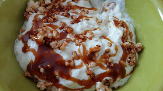
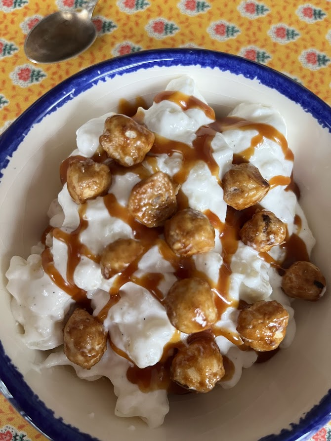

Riz au lait de Stéphane Jego
⏱️ Préparation la veille
🔥 Niveau : Moyen
👥 8 verrines



Étapes
1) Crème anglaise
- Fendez la demi-gousse de vanille, grattez les grains et mettez le tout dans le lait.
- Faites bouillir puis laissez infuser 1 heure.
- Retirez la gousse et faites frémir à nouveau.
- Fouettez les jaunes avec le sucre jusqu’à blanchiment.
- Versez 1/3 du lait chaud, mélangez, puis ajoutez le reste.
- Remettez sur feu doux sans jamais faire bouillir.
- Mélangez jusqu’à ce que la crème nappe la cuillère.
2) Le riz au lait (à préparer la veille)
- Cuisez le riz dans le lait avec le sucre pendant 1 à 2 heures.
- Le riz doit être moelleux et le lait presque absorbé.
- Laissez refroidir complètement.
- Le lendemain, détendez le riz compact avec la crème anglaise.
- Montez la crème liquide en chantilly et incorporez-la délicatement.
- Réservez au réfrigérateur.
3) Caramel au beurre salé
- Faites fondre le sucre jusqu’à obtenir un caramel blond.
- Chauffez la crème et coupez le beurre en morceaux.
- Hors du feu, ajoutez le beurre (attention aux projections).
- Ajoutez la crème chaude progressivement.
- Ajoutez le sel et laissez refroidir.
4) Crème montée au caramel
- Montez la crème en texture aérienne (pas trop ferme).
- Ajoutez délicatement 6 cuillères de caramel au beurre salé.
- Réservez au frais.
5) Noix de pécan caramélisées
- Concassez les noix et mélangez-les aux amandes.
- Torréfiez 1 à 2 minutes dans une poêle chaude.
- Ajoutez le sucre et laissez caraméliser.
- Versez sur un tapis silicone et laissez refroidir.
- Cassez en morceaux.
6) Montage des verrines
- Répartissez le riz au lait dans les verrines.
- Ajoutez une cuillerée de crème montée au caramel.
- Saupoudrez de noix de pécan caramélisées.